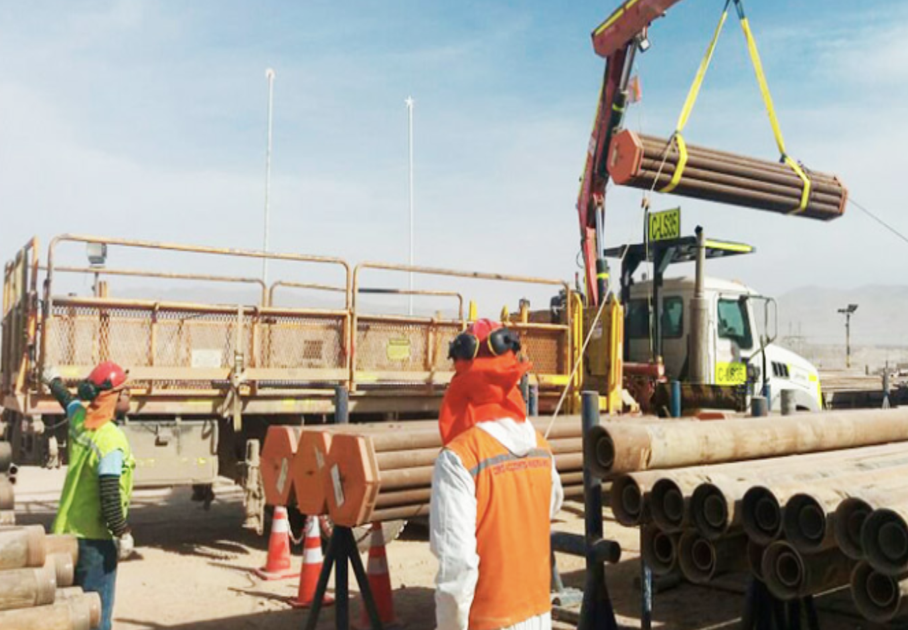
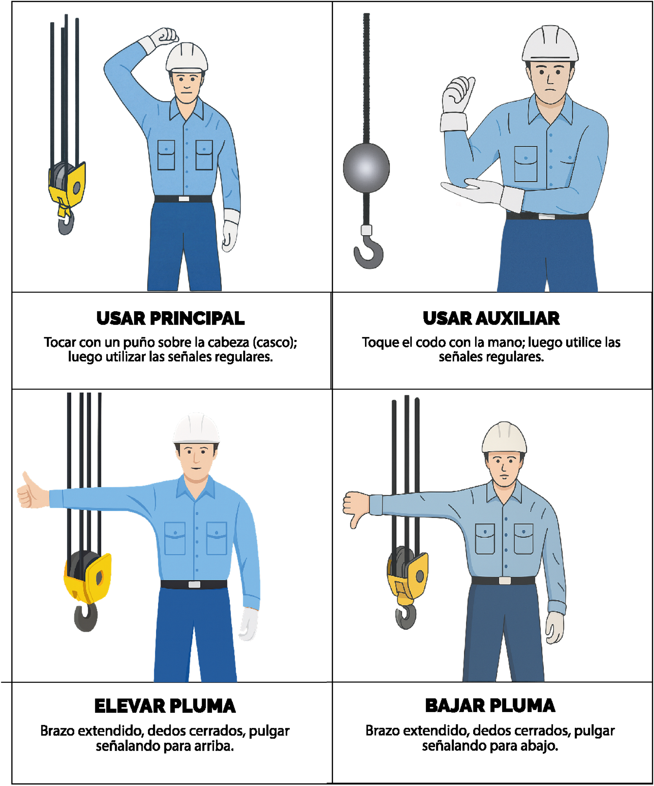
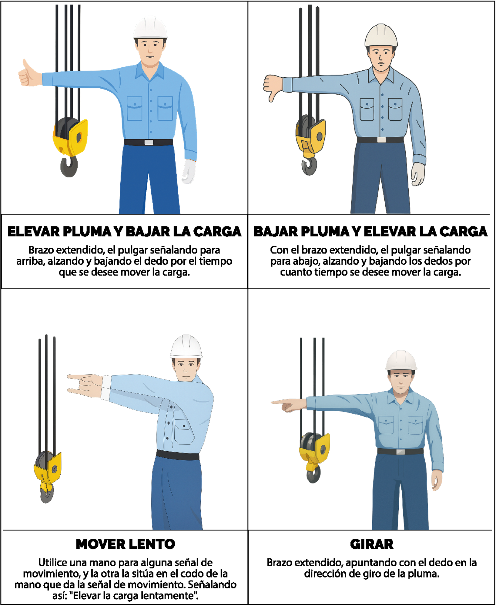
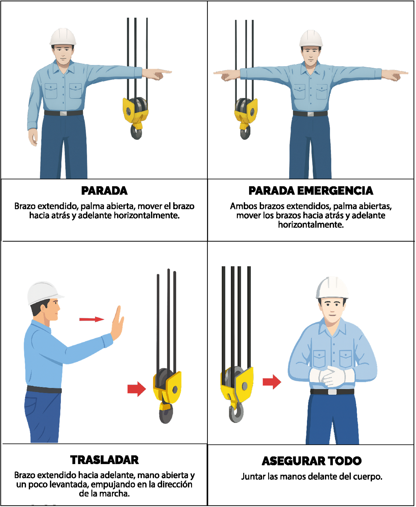
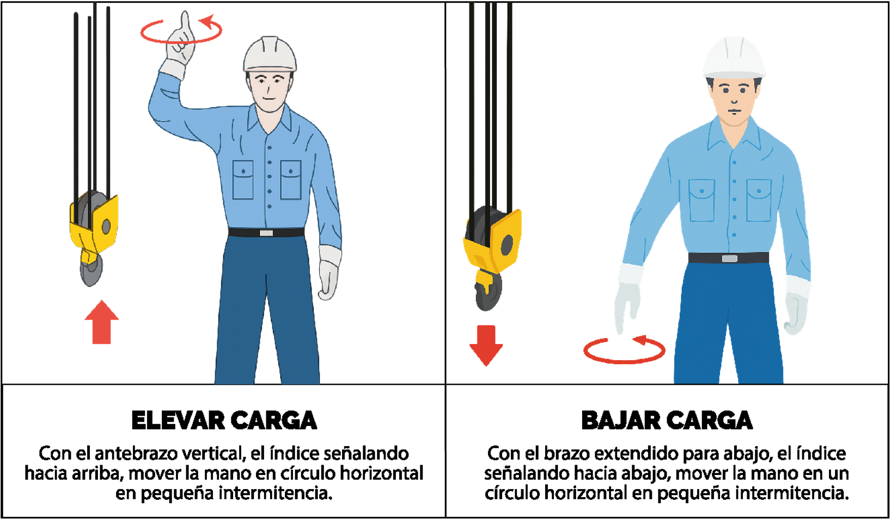

Utilice el botón "Siguiente" para avanzar por los diferentes tipos de señales. Haga clic en cualquier imagen para verla en tamaño completo.

Es la persona que dirige al operador para ejecutar maniobras con grúas utilizadas para mover, trasladar, cargar o descargar objetos pesados tales como, materiales, estructuras, equipos y maquinaria.
Sus principales funciones es determinar que los estrobos / eslingas y accesorios de izaje sean los apropiados para cada trabajo, debe saber cómo fijar los ganchos, estrobos, cadenas, cables o eslingas para levantar la carga de forma segura.
Para el proceso de levantar la carga, el RIGGER o maniobrista debe utilizar señales de mano o una radio portátil para dirigir la maniobra de izaje y orientar la carga en movimiento.

El RIGGER o maniobrista debe ubicarse en una parte visible para el operador de grúa y fuera del rango de movimientos de la carga.
Para la señal de subir el gancho, el RIGGER o maniobrista debe, flexionar el codo a 90°, llevar el brazo hacia arriba, empuñar la mano y con el dedo índice girar haciendo círculos.
Para la señal de bajar el gancho, el RIGGER o maniobrista debe, llevar el brazo hacia abajo, empuñar la mano y con el dedo índice girar haciendo círculos.

Para el uso del winche principal, el RIGGER o maniobrista debe flexionar el brazo derecho a la altura del casco.
Para el uso del winche auxiliar, el RIGGER o maniobrista debe, flexionar el brazo derecho hacia arriba, tomar el codo con la palma de la mano izquierda.
Para la señal de subir pluma, el RIGGER o maniobrista debe, extender el brazo, empuñar la mano y con el dedo pulgar hacia arriba.
Para la señal de bajar pluma, el RIGGER o maniobrista debe, extender el brazo, empuñar la mano y con el dedo pulgar hacia abajo.

Para subir lentamente el gancho, el RIGGER debe estirar el brazo izquierdo con la palma hacia abajo y con el dedo índice derecho hacia arriba, hacer círculos.
Para subir pluma y bajar gancho, el RIGGER o maniobrista debe, estirar el brazo derecho, con el pulgar hacia arriba, abrir y cerrar la mano.
Para bajar pluma y subir gancho, el RIGGER o maniobrista debe, extender el brazo derecho, y con el dedo pulgar hacia abajo, abrir y cerrar la mano.
Para la señal de girar tornamesa, el RIGGER o maniobrista debe, extender el brazo derecho y con la palma hacia abajo.

Para la señal PARE (Stop), el RIGGER debe estirar el brazo izquierdo con la palma hacia abajo y girar el brazo hacia adentro y hacia afuera.
Para la señal de PARADA DE EMERGENCIA, el RIGGER o maniobrista debe, estirar los brazos, con la palma hacia abajo y girar ambos brazos hacia adentro y hacia afuera.
Para VIAJAR O AVANCE, el RIGGER o maniobrista debe, flexionar el brazo derecho hacia adelante en señal de avanzar.
Para la señal de BLOQUEAR EL EQUIPO, el RIGGER o maniobrista debe, flexionar los brazos y entrelazar los dedos en señal de bloqueo.

Para la señal EXTENDER PLUMA TELESCÓPICA, el RIGGER o maniobrista, debe flexionar ambos brazos, cerrar los puños y con los pulgares hacia afuera mostrando señales de extender la pluma.
Para la señal RETRAER PLUMA TELESCÓPICA, el RIGGER o maniobrista, debe flexionar ambos brazos, cerrar los puños y con los pulgares hacia adentro mostrando señales de retraer la pluma.
En todo momento el RIGGER o maniobrista debe ubicarse a la vista del operador de grúa